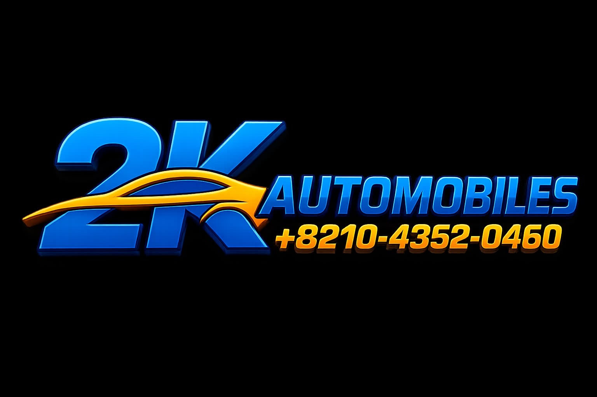

Comprendre le besoin
Définir les objectifs du projet et proposer une présence en ligne cohérente avec l’activité et l’image de 2K Automobiles.
Chef de projet digital & Développeur Web
Conception et développement du site web de 2K Automobiles. J’ai accompagné le projet de l’analyse des besoins à sa mise en ligne, en coordonnant les étapes et en veillant à créer une expérience web moderne, claire et adaptée à l’identité de l’entreprise.

L’objectif était de traduire l’identité et les besoins de 2K Automobiles en une vitrine digitale professionnelle, tout en assurant le pilotage des différentes phases de réalisation.
Définir les objectifs du projet et proposer une présence en ligne cohérente avec l’activité et l’image de 2K Automobiles.
Planifier les étapes, concevoir et développer le site, puis mettre en place une interface moderne adaptée à l’identité de l’entreprise.
Le projet a abouti à la mise en production du site web. Des tests et vérifications ont permis de contrôler le fonctionnement et l’expérience utilisateur.
En tant que Chef de projet digital et Développeur Web, j’ai assuré le suivi des étapes clés, de la conception jusqu’au lancement.
Ce projet renforce mes compétences en gestion de projet, développement web et transformation digitale. Il m’a permis de suivre un projet concret depuis l’analyse initiale jusqu’à la publication du site.
Je remercie 2K Automobiles pour la confiance accordée et cette belle opportunité de collaboration. Mon ambition reste de concevoir des solutions numériques utiles, modernes et performantes pour accompagner les entreprises dans leur développement.
Découvrir 2kautomobiles.com ↗